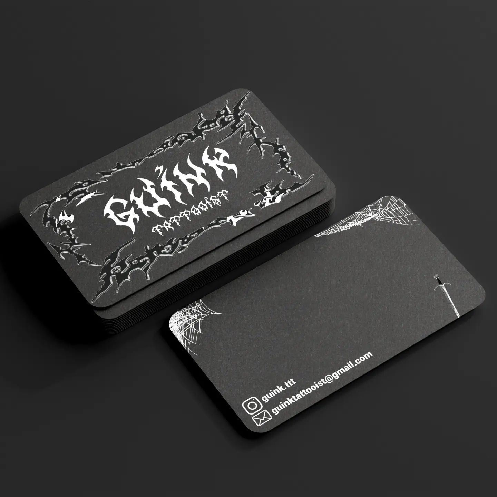
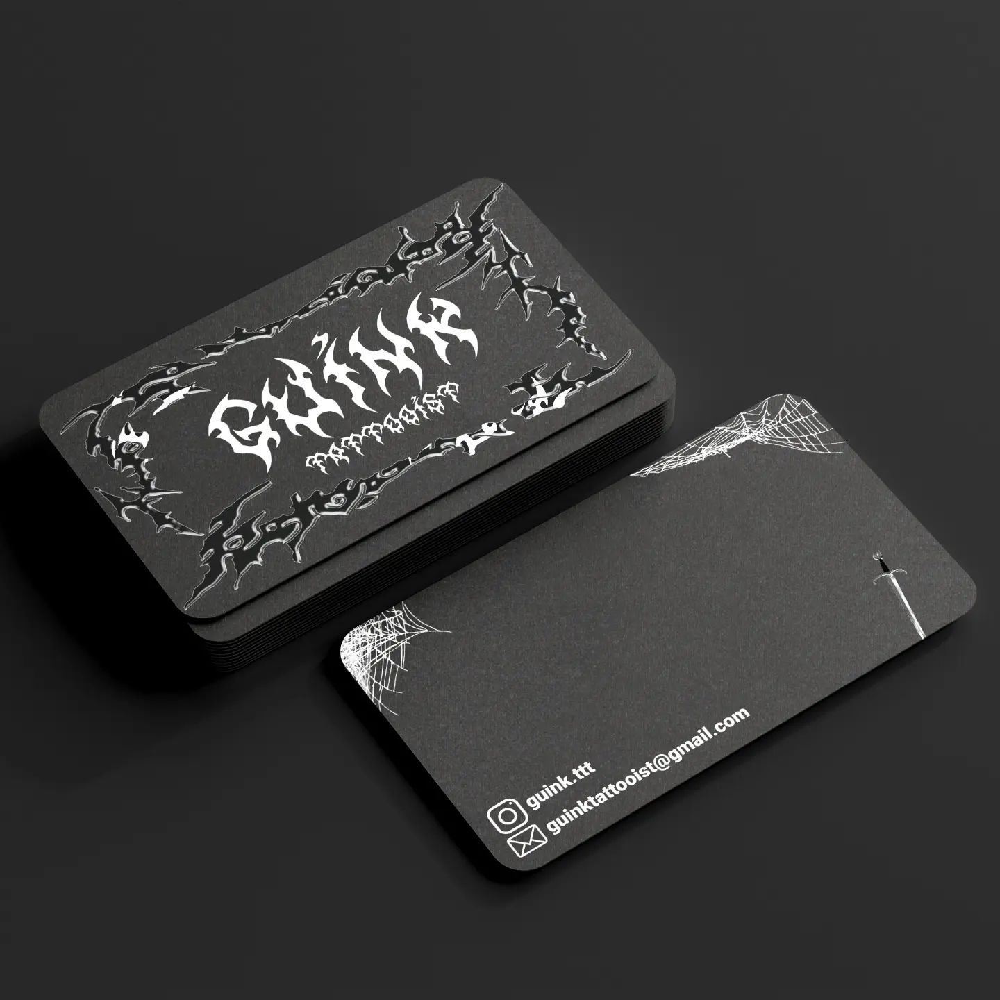

Learn more about my project
Each image represents a unique project with its own story.
Hover over the images to uncover the journey and inspiration behind each creation.
Hello!
I'm a 19yo graphic designer and cyber security student from Belgium.
I have a deep passion for learning and mastering new tools and techniques in both the fields of design and cyber security.
Hi there !
As I say before, I'm a 19-year-old graphic designer and cyber-security student from Belgium.
Like my graffiti says my name is Aloïs.
After spending two years studying graphic design, I earned a qualification that marked a significant milestone in my creative journey. This program allowed me to develop a strong foundation in design principles, software tools, and visual communication. This qualification not only honed my skills but also ignited a deep passion for crafting compelling visual narratives My experience in graphic design has been invaluable, shaping my approach to creativity and problem-solving in both design and cybersecurity.
My interest in cybersecurity began unexpectedly through YouTube. I was fascinated by videos showcasing the world of hacking and digital defense, which ignited a passion for the field. To pursue this interest further, I enrolled in a university cybersecurity program. However, I soon realized that the program’s broad curriculum didn’t align with my specific interests in red teaming and blue teaming. Seeking deeper specialization, I decided to pause my formal studies to focus on hands-on experiences and targeted learning in these areas. My enthusiasm for cybersecurity remains strong as I continue to explore and develop my skills in the areas I’m most passionate about.

 


Each image represents a unique project with its own story.
Hover over the images to uncover the journey and inspiration behind each creation.